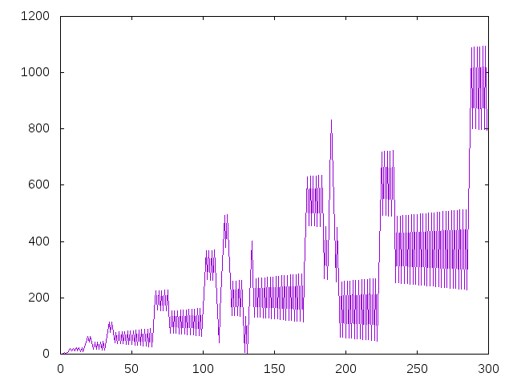
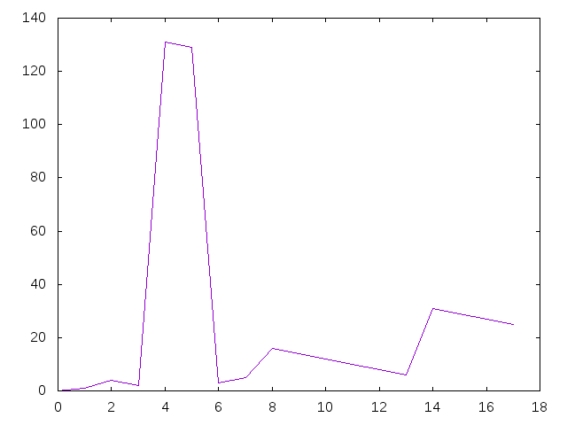

Sucesión de Recamán
La sucesión de Recamán está definida como sigue:
a(0) = 0 a(n) = a(n-1) - n, si a(n-1) > n y no figura ya en la sucesión a(n) = a(n-1) + n, en caso contrario.
Definir las funciones
sucRecaman :: [Int] invRecaman :: Int -> Int graficaSucRecaman :: Int -> IO () graficaInvRecaman :: Int -> IO ()
tales que
- sucRecaman es la lista de los términos de la sucesión de Recamám. Por ejemplo,
λ> take 25 sucRecaman3 [0,1,3,6,2,7,13,20,12,21,11,22,10,23,9,24,8,25,43,62,42,63,41,18,42] λ> sucRecaman !! 1000 3686 λ> sucRecaman !! 1000001 1057163
- (invRecaman n) es la primera posición de n en la sucesión de Recamán. Por ejemplo,
invRecaman 10 == 12 invRecaman 3686 == 1000 invRecaman 1057163 == 1000001
- (graficaSucRecaman n) dibuja los n primeros términos de la sucesión de Recamán. Por ejemplo, (graficaSucRecaman 300) dibuja

- (graficaInvRecaman n) dibuja los valores de (invRecaman k) para k entre 0 y n. Por ejemplo, (graficaInvRecaman 17) dibuja

y (graficaInvRecaman 100) dibuja
Soluciones
import qualified Data.Set as S -- 1ª solución -- =========== sucRecaman1 :: [Int] sucRecaman1 = map suc1 [0..] suc1 :: Int -> Int suc1 0 = 0 suc1 n | y > n && y - n `notElem` ys = y - n | otherwise = y + n where y = suc1 (n - 1) ys = [suc1 k | k <- [0..n - 1]] -- 2ª solución -- =========== sucRecaman2 :: [Int] sucRecaman2 = 0:zipWith3 f sucRecaman2 [1..] (repeat sucRecaman2) where f y n ys | y > n && y - n `notElem` take n ys = y - n | otherwise = y + n -- 3ª solución -- =========== sucRecaman3 :: [Int] sucRecaman3 = 0 : recaman (S.singleton 0) 1 0 recaman :: S.Set Int -> Int -> Int -> [Int] recaman s n x | x > n && (x-n) `S.notMember` s = (x-n) : recaman (S.insert (x-n) s) (n+1) (x-n) | otherwise = (x+n):recaman (S.insert (x+n) s) (n+1) (x+n) -- Comparación de eficiencia: -- λ> sucRecaman1 !! 25 -- 17 -- (3.76 secs, 2,394,593,952 bytes) -- λ> sucRecaman2 !! 25 -- 17 -- (0.00 secs, 0 bytes) -- λ> sucRecaman3 !! 25 -- 17 -- (0.00 secs, 0 bytes) -- -- λ> sucRecaman2 !! (2*10^4) -- 14358 -- (2.69 secs, 6,927,559,784 bytes) -- λ> sucRecaman3 !! (2*10^4) -- 14358 -- (0.04 secs, 0 bytes) -- Definición de invRecaman invRecaman :: Int -> Int invRecaman n = length (takeWhile (/=n) sucRecaman3) graficaSucRecaman :: Int -> IO () graficaSucRecaman n = plotList [Key Nothing] (take n sucRecaman3) graficaInvRecaman :: Int -> IO () graficaInvRecaman n = plotList [Key Nothing] [invRecaman k | k <- [0..n]]